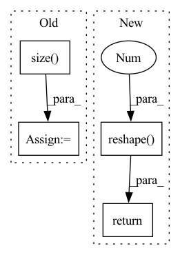

Pattern ID :8919
Before Change
tensor = ori_tensor.permute(0, 3, 1, 2).contiguous()
uppder_ones = (
torch.ones([tensor.size()[-1], tensor.size() [-1]])
.long()
.triu()
.to(ori_tensor.device)
)
upper_diag_ids = torch.nonzero(uppder_ones.view(-1), as_tuple=False).view(-1)
// flat_tensor: (batch_size, matrix_size * matrix_size, hidden_size)
flat_tensor = tensor.view(tensor.size(0), tensor.size(1), -1).permute(0, 2, 1)
tensor_upper = torch.index_select(flat_tensor, dim=1, index=upper_diag_ids)After Change
bs, matrix_size, matrix_size, hidden_size = tensor.shape
mask = torch.ones(matrix_size, matrix_size, device=tensor.device).triu().bool()[
None, :, :, None]
return tensor.masked_select(mask).reshape( bs, -1 , hidden_size)
def forward(self, seq_hiddens):
seq_hiddens: (batch_size, seq_len, hidden_size_x)In pattern: SUPERPATTERN
Frequency: 3
Non-data size: 4
Instances Fragment ID: 32724595
Project Name: junnyu/gplinker_pytorch
Commit Name: 646f478a00ca38cb2975716cba55ca2aee83b980
Time: 2022-02-28
Author: 573009727@qq.com
File Name: utils/components.py
M Class Name: HandshakingKernel
N Class Name: HandshakingKernel
M Method Name: upper_reg2seq(2)
N Method Name: upper_reg2seq(2)
M Parent Class: nn.Module
N Parent Class: nn.Module
M File Name: utils/components.py
N File Name: utils/components.py
M Start Line: 247
M End Line: 258
N Start Line: 247
N End Line: 250
Before Change
// y = y.permute(0, 2, 1, 3, 4)
// return y.reshape(y.shape[0], -1, y.shape[3], y.shape[4])
b, n, h, w = x2.data.size()
b_n = b * n // 2
y = x2.reshape(b_n, 2, h * w)
y = y.permute(1, 0, 2)
y = y.reshape(2, -1, n // 2, h, w)After Change
x1 = self.cv1(x)
x2 = torch.cat((x1, self.cv2(x1)), 1)
// shuffle
y = x2.reshape( x2.shape[0], 2 , x2.shape[1] // 2, x2.shape[2], x2.shape[3])
y = y.permute(0, 2, 1, 3, 4)
return y.reshape(y.shape[0], -1, y.shape[3], y.shape[4])
class GSConvns(GSConv): Fragment ID: 32724596
Project Name: alanli1997/slim-neck-by-gsconv
Commit Name: d777012fa58bb0945c52782dda58f48a4fc53521
Time: 2023-02-05
Author: Yanzailee@163.com
File Name: models_inPaper.py
M Class Name: GSConv
N Class Name: GSConv
M Method Name: forward(2)
N Method Name: forward(2)
M Parent Class: nn.Module
N Parent Class: nn.Module
M File Name: models_inPaper.py
N File Name: models_inPaper.py
M Start Line: 45
M End Line: 57
N Start Line: 72
N End Line: 76
Before Change
if n_dim == 3:
n_channels = 1
batch_size, n_freqs, n_frames = input.size()
else:
batch_size, n_channels, n_freqs, n_frames = input.size()
input = input.reshape(batch_size * n_channels, n_freqs, n_frames)
After Change
cumulative_std = torch.sqrt(cumulative_var + EPSILON) // [B, T]
cumulative_mean = cumulative_mean.reshape(batch_size * num_channels, 1, num_frames)
cumulative_std = cumulative_std.reshape( batch_size * num_channels, 1 , num_frames)
normed = (input - cumulative_mean) / cumulative_std
return normed.reshape(batch_size, num_channels, num_freqs, num_frames)
def norm_wrapper(self, norm_type: str):
if norm_type == "offline_laplace_norm": Fragment ID: 32724585
Project Name: haoxiangsnr/fullsubnet
Commit Name: 321920989a4aa255158770213e814befc8f94f27
Time: 2021-02-08
Author: haoxiangsnr@gmail.com
File Name: audio_zen/model/base_model.py
M Class Name: BaseModel
N Class Name: BaseModel
M Method Name: cumulative_layer_norm(1)
N Method Name: cumulative_layer_norm(1)
M Parent Class: nn.Module
N Parent Class: nn.Module
M File Name: audio_zen/model/base_model.py
N File Name: audio_zen/model/base_model.py
M Start Line: 225
M End Line: 261
N Start Line: 276
N End Line: 304